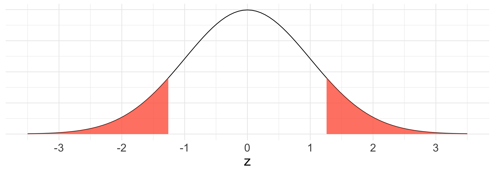
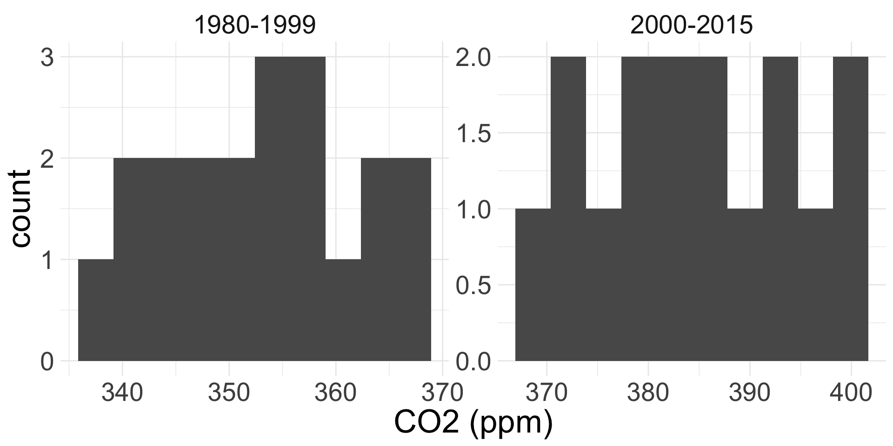

Difference in means and proportions
4/17/25
Test and CI for a single mean
If we know \(\sigma\), use standard Normal distribution
If we don’t know \(\sigma\) and only have access to \(s\), use \(t\) distribution
Now suppose we have samples of binary outcomes from two different populations.
Suppose we have two populations 1 and 2, and want to either estimate the value of or conduct a test for the difference in population proportions: \(p_{1} - p_{2}\)
We have samples of size \(n_{1}\) and \(n_{2}\) from each population
Reasonable point estimate: \(\hat{p}_{1, obs} - \hat{p}_{2,obs}\)
We will obtain the sampling distribution of the difference of two sample proportions
Now that we have two populations, conditions for CLT will look slightly different!
In order to use CLT approximation, we have to ensure conditions are met:
If above hold, then:
\[ \hat{p}_{1} - \hat{p}_{2} \overset{\cdot}{\sim} N\left(p_{1} - p_{2}, \sqrt{\frac{p_{1} (1-p_{1})}{n_{1}} + \frac{p_{2} (1-p_{2})}{n_{2}}} \right) \]
where \(p_{1}\) and \(p_{2}\) are the population proportions
If we want to obtain a \(\gamma\times 100\%\) CI for \(p_{1} - p_{2}\), that means we don’t know the value of \(p_{1} - p_{2}\)!
Like in the case of the CI for a single proportion, we will use our observed proportions to check success-failure
Success-failure condition for CI for difference in proportions:
\(n_{1} \hat{p}_{1,obs} \geq 10\) and \(n_{1} (1-\hat{p}_{1,obs}) \geq 10\)
\(n_{2} \hat{p}_{2,obs} \geq 10\) and \(n_{2} (1-\hat{p}_{2,obs}) \geq 10\)
Then our formula for the CI is the same as before:
\[ \begin{align*} &\text{point. est} \pm \text{critical val.}\times \widehat{\text{SE}} = \\ &(\hat{p}_{1,obs} - \hat{p}_{2,obs}) \pm z^{*}_{(1+\gamma)/2} \sqrt{\frac{\hat{p}_{1,obs} (1-\hat{p}_{1,obs})}{n_{1}} + \frac{\hat{p}_{2,obs} (1-\hat{p}_{2,obs})}{n_{2}}} \end{align*} \]
A survey asked 592 randomly sampled registered voters in California: Do you support or oppose drilling for oil and natural gas off the Coast of California? We have the following distribution of responses separated by whether the respondent graduated from college:
| position | no | yes | total |
|---|---|---|---|
| oppose | 126 | 180 | 306 |
| support | 132 | 154 | 286 |
| total | 258 | 334 | 592 |
Let’s obtain a 95% CI via the CLT for the difference in the proportion of college and non-college Californians who support offshore drilling.
Let population 1 be college attendees, and population 2 be non-college attendees. We want a 95% CI for \(p_{1} - p_{2}\), where \(p_{i}\) is the proportion of population \(i\) who support offshore drilling.
Obtain useful statistics
\(n_{1} = 334\), \(n_{2} = 258\)
\(\hat{p}_{1, obs} = \frac{154}{334} = 0.461\)
\(\hat{p}_{2, obs} = \frac{132}{258} = 0.512\)
Check conditions for CLT.
Independence (extended)? Randomly sampled
Success-failure (extended)?
Collect the components of CI:
Point estimate
Critical value (code)
\(\text{SE}\) or \(\widehat{\text{SE}}\)
\(\hat{p}_{1,obs} - \hat{p}_{2,obs} = 0.461 - 0.512 = -0.051\)
\(z^{*}_{0.975} =\) qnorm(0.975, 0, 1) \(\approx 1.96\)
\(\widehat{\text{SE}} = \sqrt{\frac{0.461(1 - 0.461)}{334} + \frac{0.512(1 - 0.512)}{258}} = 0.041\)
So putting it all together, our 95% CI is:
\[ -0.051 \pm 1.96 \times 0.041 = (-0.131, 0.029) \]
Interpret!
Hypothesis tests for difference in proportions in this class will take the form:
\[ \begin{align*} H_{0}: p_{1} - p_{2} &= 0 \\ H_{A}: \ p_{1} - p_{2} &\neq 0\\ \text{ or }\ &< \\ \text{ or }\ &> \end{align*} \]
For success-failure condition for difference in two proportions, we don’t have null-hypothesized values for \(p_{1}\) or \(p_{2}\).
So how do we check the condition??
Since \(H_{0}: p_{1} = p_{2}\), then under the null \(\hat{p}_{1,obs}\) and \(\hat{p}_{2,obs}\) come from the same population
So under this null, we use a special proportion called the pooled proportion:
\[ \hat{p}_{pooled} = \frac{\text{total # of successes from both samples}}{\text{combined sample size}} \]
This is the best estimate of both \(p_{1}\) and \(p_{2}\) if \(H_{0}: p_{1} = p_{2}\) is true!
\[ \begin{align*} \hat{p}_{1} - \hat{p}_{2} &\overset{\cdot}{\sim} N\left(p_{1} - p_{2}, \sqrt{\frac{p_{1} (1-p_{1})}{n_{1}} + \frac{p_{2} (1-p_{2})}{n_{2}}} \right) \qquad \text{(CLT)} \\ &\overset{\cdot}{\sim} N\big(0, \underbrace{\sqrt{\frac{\hat{p}_{pooled}(1 - \hat{p}_{pooled})}{n_{1}} + \frac{\hat{p}_{pooled}(1 - \hat{p}_{pooled})}{n_{2}}}}_{\widehat{\text{SE}}_{0}} \big) \qquad (H_{0}) \end{align*} \]
Obtain test-statistic:
\[ z = \frac{\text{point estimate} - \text{null value}}{\text{SE}} \approx \frac{(\hat{p}_{1,obs} - \hat{p}_{2,obs}) - 0}{\widehat{\text{SE}}_{0}} \]
To obtain p-value, we want \(\text{Pr}(Z \geq z)\) and/or \(\text{Pr}(Z \leq z)\) where \(Z \sim N(0,1)\)
pnorm(z, 0, 1)Using the same data as before, let’s answer the following question:
Do the data provide strong evidence at the 0.05 level that the proportion of college graduates who support off-shore drilling in California is different than that of non-college graduates?
Let \(p_{1}\) and \(p_{2}\) be defined as before.
Define hypotheses
Obtain pooled proportion, and use it to check conditions for CLT.
\(\hat{p}_{pooled} =\frac{154 + 132}{334 + 258} = \frac{286}{592} = 0.483\)
Conditions
Independence (extended): random sample
Success-failure (extended):
\(n_{1} \hat{p}_{pooled} = 334 \times 0.483 = 161.32 \geq 10\)
\(n_{1} (1 - \hat{p}_{pooled}) = 334 \times (1 - 0.483) = 172.68 \geq 10\)
\(n_{2} \hat{p}_{pooled} = 258 \times 0.483 = 124.61 \geq 10\)
\(n_{2} (1 - \hat{p}_{pooled}) = 258 \times (1 - 0.483) = 133.39 \geq 10\)
Since conditions are met, we can proceed with CLT-based test!
Find the null distribution for \(\hat{p}_{1} - \hat{p}_{2}\).
\[ \hat{p}_{1} - \hat{p}_{2} \overset{\cdot}{\sim}N\left(0, \sqrt{\frac{0.483(1 - 0.483)}{334} + \frac{0.483(1 - 0.483)}{258}} = 0.041 \right) \]
Set up calculation for test statistic
\[ z =\frac{( \hat{p}_{1, obs}- \hat{p}_{2, obs}) - 0}{\widehat{\text{SE}}_{0}} = \frac{(0.461 - 0.512) - 0}{0.041} = -1.244 \]
Draw picture and write code for p-value

p-value calculation:
\(\text{Pr}(Z \leq z) + \text{Pr}(Z \geq -z)\)
2 * pnorm(-1.244, 0, 1) = 0.2134996
Make a decision and conclusion in context.
We still have two populations, but the variable of interest is quantitative (i.e. not binary).
We are interested in learning about the difference in the means of each population.
Let \(\mu_{1}\) and \(\mu_{2}\) represent the population means for the two populations 1 and 2
Samples of size \(n_{1}\) and \(n_{2}\) from each population, respectively
Conditions for CLT
Independence (extended): need data within and between the two groups
Normality: we need to check for approximate normality for both groups separately
If CLT conditions met, the distribution of difference in sample means is:
\[ \bar{X}_{1} - \bar{X}_{2} \overset{\cdot}{\sim} N\left(\mu_{1} - \mu_{2}, \sqrt{\frac{\sigma_{1}^2}{n_{1}} + \frac{\sigma_{2}^2}{n_{2}}} \right) \] where \(n_{1}\) and \(n_{2}\) are the sample sizes.
If the conditions hold, then our usual formula for \(\gamma \times 100\%\) CI still holds:
\[ \text{point estimate} \pm \text{critical value} \times \text{SE} \]
Point estimate: \(\bar{x}_{1,obs} - \bar{x}_{2,obs}\)
If \(\sigma_{1}\) and \(\sigma_{2}\) known:
\(\text{SE} = \sqrt{\frac{\sigma_{1}^2}{n_{1}} + \frac{\sigma_{2}^2}{n_{2}}}\)
Critical value: \(z_{(1+\gamma)/2}^*\)
If \(\sigma_{1}\) and \(\sigma_{2}\) unknown:
\(\widehat{\text{SE}} \approx \sqrt{\frac{s_{1}^2}{n_{1}} + \frac{s_{2}^2}{n_{2}}}\)
critical value: \(t_{df, (1+\gamma)/2}^*\)
\((1+\gamma)/2\) percentile of \(t_{df}\)
\(df = \min\{n_{1} -1, n_{2} - 1\}\)
The Mauna Loa Observatory in Hawaii of monitors atmospheric solar, atmospheric, and meteorological parameters
We have data on annual atmospheric CO2 concentrations from 1980-2015.
We will obtain a 90% confidence interval for the difference between the average atmospheric C02 levels (ppm) from years 2000-2015 and years 1980-1999.

| group | n | xbar | s |
|---|---|---|---|
| 1980-1999 | 20 | 353.12 | 9.0 |
| 2000-2015 | 16 | 385.02 | 9.9 |
Define parameters.
Check conditions for CLT.
Independence (extended): most likely violated because CO2 levels are probably dependent across time. BUT let’s proceed with caution anyway.
Normality: \(n_{1} = 16 < 30\) and \(n_{2} = 20 < 30\). But since histograms don’t reveal outliers, Normality condition appears met.
Collect components for CI:
Point estimate
Critical value (code)
\(\text{SE}\) or \(\widehat{\text{SE}}\)
\(\bar{x}_{1,obs} - \bar{x}_{2,obs} = 385.02 - 353.12 = 31.9\)
Since we don’t know \(\sigma_{1}\) nor \(\sigma_{2}\), need to use \(t\)-distribution
Degrees of freedom = \(\min\{16 - 1, 20 -1\} = 15\)
\(t^*_{0.95}\) = qt(0.95, df = 15) = 1.75
\(\widehat{\text{SE}} = \sqrt{\frac{9.9^2}{16} + \frac{9^2}{20}} = 3.19\)
Put it all together:
\[ \text{point est.} \pm \text{crit. val}\times \text{SE} = 31.9 \pm 1.75 \times 3.19 = (26.3175, 37.4825) \]
Interpret our CI of (26.3175, 37.4825) in context!
Now suppose we’re interested in testing for the difference between \(\mu_{1}\) and \(\mu_{2}\).
\(H_{0}: \mu_{1} - \mu_{2} = 0\) versus \(H_{A}: \mu_{1} - \mu_{2} \neq 0\) (or \(<\) or \(>\))
Same conditions as in CI are necessary for CLT-based inference!
If CLT met, then under \(H_{0}\), the null distribution is
\[ \bar{X}_{1} - \bar{X}_{2} \overset{\cdot}{\sim} N\left(0, \sqrt{\frac{\sigma_{1}^2}{n_{1}} + \frac{\sigma_{2}^2}{n_{2}}} \right) \]
Test-statistic is of form:
\[ \frac{\text{point est.} - \text{null value}}{\text{SE}_{0}} \]
If \(\sigma_{1}, \sigma_{2}\) known, our test-statistic is:
\[ z = \frac{(\bar{x}_{1,obs} - \bar{x}_{2,obs}) - 0}{ \sqrt{\frac{\sigma_{1}^2}{n_{1}} + \frac{\sigma_{2}^2}{n_{2}}}} \sim N(0,1) \]
If \(\sigma_{1}, \sigma_{2}\) unknown, our test-statistic is
\[ t = \frac{(\bar{x}_{1,obs} - \bar{x}_{2,obs}) - 0}{ \sqrt{\frac{s_{1}^2}{n_{1}} + \frac{s_{2}^2}{n_{2}}}} \sim t_{df} \]
\(df = \min\{n_{1}-1, n_{2}-1 \}\)
Now let’s test if the mean CO2 level in 2000-2015 was greater than that mean CO2 level in 1980-1999 at the \(0.05\) level using CLT.
Obtain test-statistic and p-value.
Find the value of the test-statistic and its distribution
\[ t = \frac{(385.02 - 353.12)- 0}{3.19} = 10 \sim t_{15} \]
Write code for p-value (optionally draw picture)
1- pt(10, df = 15) = 2.4984491^{-8} (tiny!)